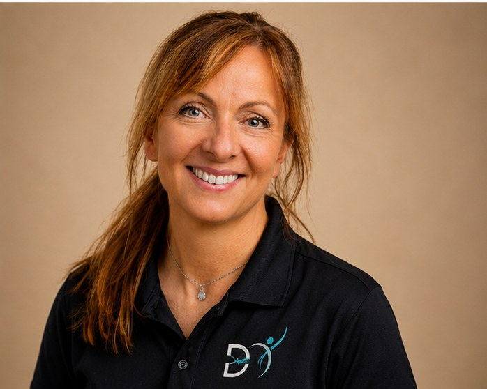

För arbetsgivare
Gör det enkelt att ta hjälp tidigt
Ni köper tio hälsosamtal. Medarbetarna bokar själva, när de behöver, utan att gå via chefen eller HR. Samtalen är kostnadsfria för medarbetaren och gäller i tolv månader.
Så hålls det konfidentiellt
Arbetsgivaren betalar.
Medarbetaren bokar.
Samtalet stannar i samtalet.
Så fungerar det
Steg 1
En faktura, inget abonnemang och ingen bindningstid.
Steg 2
Lägg den på intranätet eller i ett mejl till alla. Vi behöver inga namn och inga listor.
Steg 3
45 minuter digitalt, på en tid som passar. Kostnadsfritt, och ingen behöver be om lov.
Steg 4
Samtalen ligger kvar tills de är använda. Behovet kommer sällan på beställning.
I samtalet
Ett samtal med någon som inte är chefen, inte kollegan och inte hemma. Medarbetaren får hjälp att förstå vad som påverkar hur hen mår, vad som behövs här och nu och vad som går att förändra på längre sikt.
Samtalet bygger på Motiverande samtal, en evidensbaserad metod som utgår från att medarbetaren är experten på sitt eget liv. Samtalsledaren är utbildad inom hälsa och bidrar med kunskap och konkreta verktyg när det behövs.
Det vi pratar om, utifrån vad medarbetaren själv tar upp
Vad ni får tillbaka
Konfidentialiteten är inte en detalj i erbjudandet, den är hela poängen med det. Men ni ska inte behöva betala för något ni är helt blinda för.
Medarbetaren får en fråga om samtalet var hjälpsamt och vad som var värdefullt. Svaret lämnas anonymt, utan namn och utan mejladress.
Ni får en sammanställning av svaren: hur många samtal som bokats och vad medarbetarna lyfte fram som värdefullt.
Ni får aldrig veta vem som bokat, när eller vad som sagts. Inget i sammanställningen går att härleda till en enskild person.
Samtalsledarna
Tre samtalsledare med olika ingång. Medarbetaren bokar den som känns närmast sin egen situation.
Hälsopromotör & ekonom
Stress, återhämtning och hållbart välmående. För den som vill förstå sin stress, få tillbaka känslan av kontroll och hitta mer lugn, lust och kraft.

Ergonom
Rörelse, ergonomi och hållbar hälsa. För den som vill hitta bättre balans mellan belastning och återhämtning.
Hälsopromotör
Levnadsvanor, stress och motivation. För den som vill förstå helheten, få nya perspektiv och stöd i att skapa förändring.
Bland nordiska arbetstagare vars arbetsförmåga påverkats av psykisk ohälsa hade 16 procent vänt sig till sin chef och 4 procent till HR. En av fem hade inte sökt hjälp alls.
Det säger något om hur svårt det kan vara att ta det första steget, även på en bra arbetsplats.
Därför vill vi göra det enkelt för medarbetaren att själv söka stöd tidigt, utan att först behöva bestämma om problemet hör hemma hos chefen, HR, vården eller någon annanstans.
Varför nu
Ingen sätter upp en brandvarnare för att de väntar sig en brand. Den sitter där för att konsekvensen av att inte ha den är för stor.
Så är det här också. De flesta av era medarbetare mår bra idag. Men den som börjar känna att det inte är hållbart ska inte behöva vänta på ett sjukintyg innan någon frågar hur det är.
Stödet ska redan finnas där den dagen någon behöver det.
31 000 krtvå veckors sjukfrånvaro för en medarbetare
12 000 krtio hälsosamtal, giltiga i ett år
Sjukfrånvarokostnaden är räknad enligt Skandias modell. Så räknar vi →
Viktigt att veta
Samtalsledarna är hälsopromotörer och ergonom, inte kliniker. Vi ställer inga diagnoser, skriver inga intyg och ersätter varken vård eller företagshälsovård.
Behöver någon vård går den vägen alltid först. Då hjälper vi medarbetaren vidare, till vårdcentral, 1177 eller er egen företagshälsovård om ni har en.
Samtalet finns för allt som ligger före det: när belastningen börjar bli för hög men ingen ännu är sjuk.
Berätta kort om er organisation, så återkommer vi med ett förslag på mejl. Inga långa processer och ingen krånglig administration.
12 000 krtio hälsosamtal, exklusive moms
Ett samtal är 45 minuter och sker digitalt. Samtalen gäller i tolv månader från köpet och är kostnadsfria för medarbetaren.
Vill ni ge stöd över tid? Det digitala programmet ger kunskap, verktyg och övningar inom alla områden som påverkar hur man mår. Se hela erbjudandet →